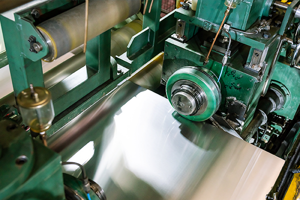
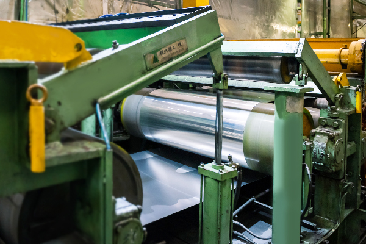
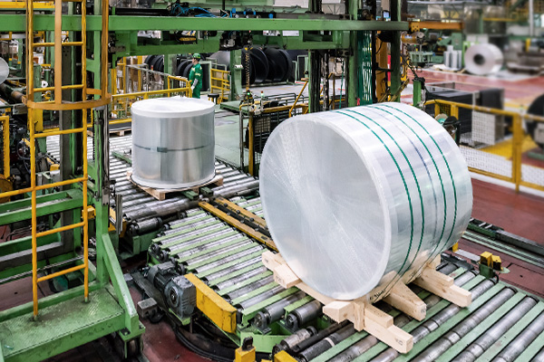

@@include('./include/header.html')
생산공정
MANUFACTURING PROCESS
제품 Finishing
- 폭 절단Slitting
- 장력 형상 교정Tension Leveler
- 포장 Packaging

- 폭 절단 Slitting
- 폭 절단은 수요자가 요구하는 폭으로 Coil을 절단하는 것으로서 연속
하여 회전하는 원형 Knife에 의하여 최종 제품 폭으로 Trimming 또는
Slitting 절단하는 기능을 수행한다.
폭 절단기에는 On-Line으로 두께 측정기, Surface inspector, Oiler
등이 설치되어 있는 설비가 활용되고 있다.

- 장력 형상 교정 Tension Leveler
- 냉간 압연된 코일을 고객이 요구하는 평탄도 품질에 맞추기 위해 장력
및 Leveler roll을 이용하여 평탄도를 교정하는 기능을 수행한다.
또한 냉간 압연에서 사용된 압연유를 제거하고, 고객 기대하는 표면
품질을 만족하기 위해서 표면을 세척하는 공정이 선행된다.

- 포장 Packaging
- 알루미늄은 철강에 비해 연하고, 외부의 작은 힘에도 변형이 일어나기
쉽기 때문에 가공된 제품의 포장은 매우 중요한 공정 중의 하나이다.
또한 수분 산화를 효과적으로 방지하기 위해 포장은 기밀 및 방수 상태
를 유지한다.
코일 자동포장기는 고객이 요구하는 다양한 포장 방법에 대응하고,
보관 및 사용에 있어 기대하는 균일한 포장 품질을 보여준다.
@@include('./include/footer.html')